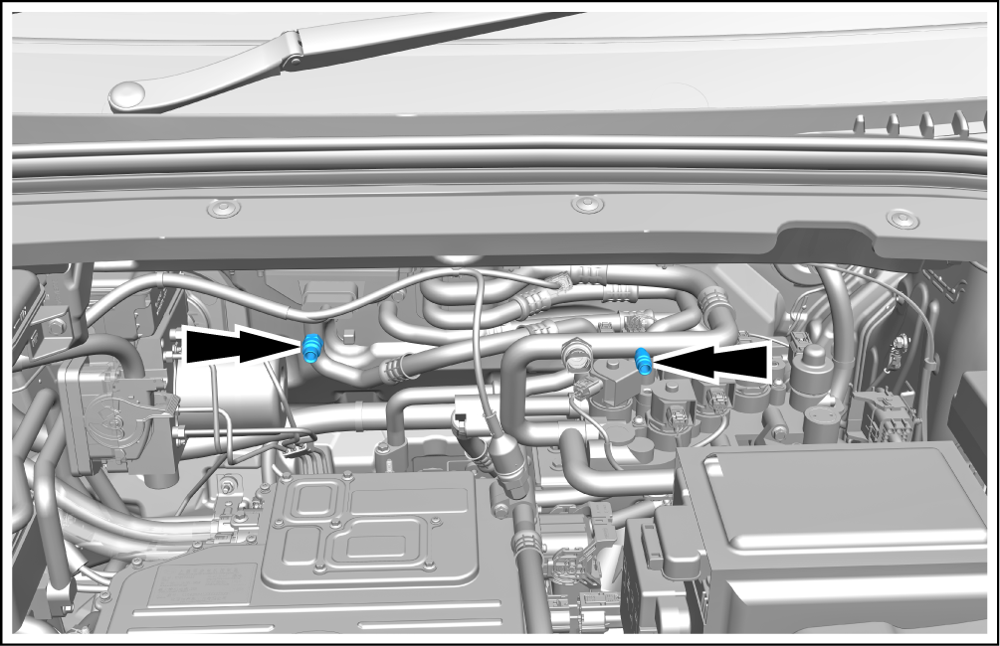

Recovery and Filling of Refrigerant
Recover

-
Set the vehicle power supply to OFF.
-
Remove the protective covers of the high and low sides connectors of the air conditioning system.
-
Use the refrigerant recovery and filling machine, and connect the quick connectors to the high and low sides connectors of the air conditioning system.
 -
Open the high and low sides pressure valve of the refrigerant recovery and filling machine.
-
Check the high and low sides pressure gauges on the control panel of the refrigerant recovery and filling machine to ensure that there is pressure in the air conditioning system. If there is no pressure, there will be no recoverable refrigerant in the system.
-
Turn on the refrigerant recovery and filling machine.
-
Start to recover the refrigerant of the air conditioning system.
-
Check the pressure gauge on the low side of the control panel. If the air conditioning system pressure remains zero, the recovery will be deemed as completed.
-
If the indication of the pressure gauge at the low side is not zero, there is still refrigerant in the system. Recover the remaining refrigerant. Repeat this step until the system pressure remains zero for 2min.
-
Use a leak detector to find out and correct the leakage in the refrigerant pipeline of the air conditioner.
Fill
-
Fill with lubricating oil compatible with the vehicle's air conditioning system.
-
Confirm that the high and low pressure valves are open and start filling refrigerant.
-
Start the vehicle air conditioning system and set it to refrigeration and fresh air mode. Set the blower motor to the highest value. Fill refrigerant to the specified level.
-
Compare the reading with the system specification.
-
Check the evaporator outlet temperature to ensure that the operation of the air conditioning system is up to standard.
-
Turn off the air conditioning system.
-
Disconnect the high and low side connectors of the air conditioning system from the vehicle.
-
Install the protective covers of the high and low sides connectors of the air conditioning system.